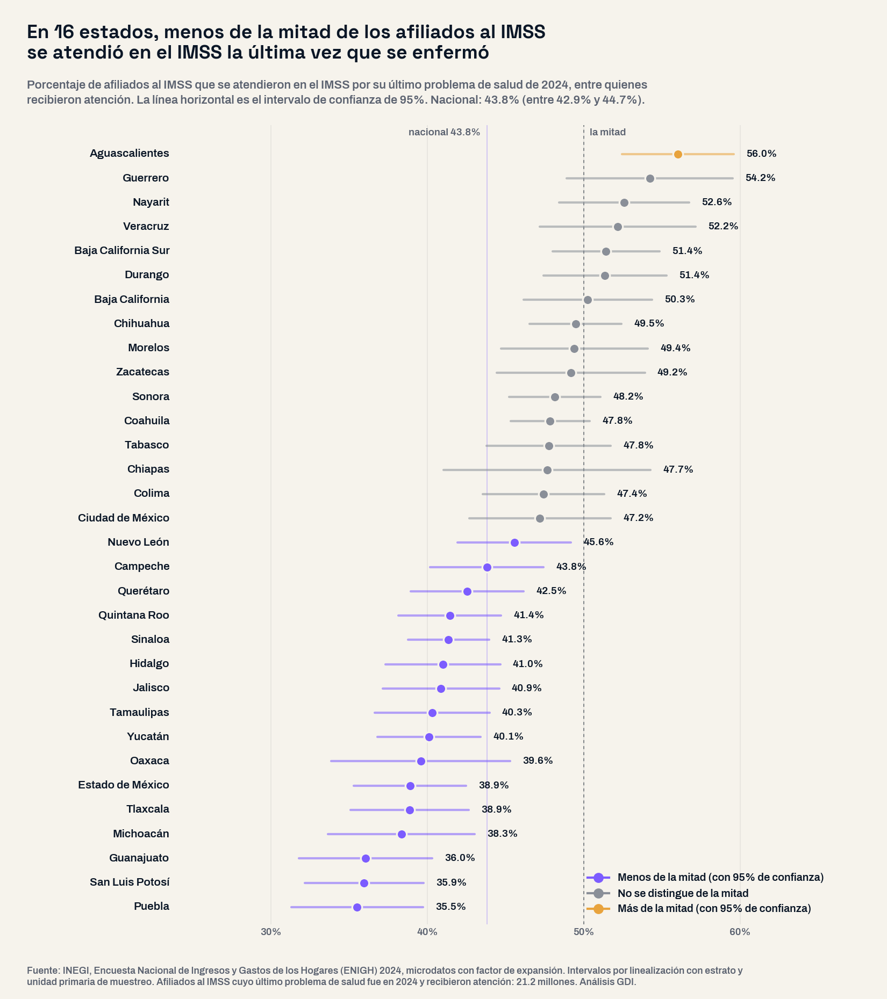
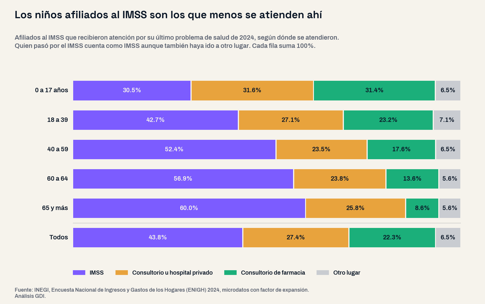

Este análisis partió de una pregunta abierta: ¿quién sostiene al IMSS, quién depende de él y a dónde va la gente afiliada cuando se enferma? Se cruzaron, como columnas separadas, el empleo que cotiza al Instituto, la afiliación de la Encuesta Intercensal 2025 y los microdatos de la Encuesta Nacional de Ingresos y Gastos de los Hogares (ENIGH) 2024, que preguntan a cada persona dónde se atendió la última vez que un problema de salud le impidió hacer sus actividades. Se ordenaron los 32 estados sin preseleccionar regiones y se leyeron junto al diagnóstico que el IMSS entregó al Congreso el 29 de junio de 2026.
El diagnóstico que entregó el propio IMSS
El Informe al Ejecutivo Federal y al Congreso 2025-2026 es claro sobre el seguro que paga la atención médica, el de Enfermedades y Maternidad: en 2025 sus gastos superaron a sus ingresos en $151,127 millones de pesos, y para 2026 el Instituto estima un faltante de $175,585 millones (pesos de 2026). Para equilibrarse necesitaría una cuota equivalente a 12.94% del salario de cotización y recibe en promedio 8.9%: las cuotas y aportaciones cubren 69% de lo que gasta. La atención médica de las personas pensionadas explica 69% de ese déficit entre 2015 y 2025.
En conjunto, sus ingresos cubren sus gastos hasta 2031; de 2032 a 2035 usaría reservas y desde 2036 aparece el déficit, un año antes de lo que calculaba el informe anterior. El documento reconoce que la demanda, frente al rezago de infraestructura, «ha provocado saturación y tiempos de espera largos». Esa frase se puede medir desde los hogares.
Radiografía: más cotizantes y más afiliados que nunca
En septiembre de 2026 había 22,927,276 puestos de trabajo registrados ante el IMSS, 16.4% más que en septiembre de 2020, aunque el ritmo se frenó: el crecimiento anual pasó de 4.5% en septiembre de 2021 a 0.4% en 2025 y 1.6% en 2026.
Del otro lado, la Intercensal 2025 cuenta 51.1 millones de personas afiliadas al IMSS, 54.1% de toda la población con afiliación a algún servicio de salud; en el Censo 2020 eran 47.2 millones y 51.0%. Pero la misma encuesta registra 43.3 millones de personas que usan el IMSS como su lugar habitual de atención: 7.8 millones menos que los afiliados.

Alerta 1: menos de la mitad se atiende en el IMSS
La ENIGH 2024 identifica a 28.4 millones de afiliados al IMSS cuyo último problema de salud ocurrió en 2024; 74.8% buscó atención y 21.2 millones la recibieron. De ellos, 43.8% se atendió en el IMSS, 27.4% en un consultorio u hospital privado y 22.3% en el consultorio de una farmacia; el 6.5% restante fue a otros servicios; a un centro de salud u hospital de la Secretaría de Salud acudió apenas 3.5%. Son 10.5 millones de personas con derecho al IMSS que resolvieron su atención en otro lado. Con el diseño muestral de la encuesta, la proporción nacional que se atendió en el IMSS está entre 42.9% y 44.7%.
Fuera del IMSS la atención casi nunca es gratuita: pagó la consulta 91.7% de quienes fueron a un consultorio privado y 98.2% de quienes fueron a una farmacia; en el IMSS, 93.6% no pagó nada. La diferencia más visible es la espera: 30.0% de quienes se atendieron en el IMSS esperó más de una hora ya estando en la unidad, contra 3.6% en consultorios privados y 3.9% en farmacias.
Alerta 2: no es un problema del sur pobre
La hipótesis fácil sería que esto ocurre donde el ingreso es más bajo. Los datos no la sostienen. Los 16 estados donde menos de la mitad se atendió en el IMSS, con 95% de confianza, van de Nuevo León (45.6%), Tamaulipas (40.3%) y Sinaloa (41.3%) a Jalisco (40.9%), Querétaro (42.5%) y el Estado de México (38.9%), y a Oaxaca (39.6%). Los porcentajes más bajos están en Puebla (35.5%), San Luis Potosí (35.9%) y Guanajuato (36.0%), estados industriales del centro y el Bajío. Solo Aguascalientes (56.0%) queda con certeza por encima de la mitad.
Entre los 32 estados, el porcentaje no se mueve con el crecimiento del empleo formal 2020-2025 (correlación de -0.14), ni con la proporción de población afiliada al IMSS (0.18), ni con la carencia de acceso a la salud (-0.26). Sí coincide con la brecha entre afiliados y usuarios de la Intercensal (0.48): dos encuestas independientes apuntan igual.
| Estado | Afiliados atendidos en el IMSS, 2024 (intervalo de 95%) | En consultorio privado o de farmacia | Personas afiliadas al IMSS, 2025 | Sin afiliación a servicios de salud, 2025 | Carencia de acceso a la salud, 2018 → 2024 |
|---|---|---|---|---|---|
| Puebla | 35.5% (31.3–39.7) | 60.3% | 1,617,742 | 38.0% | 20.8 → 47.3% |
| San Luis Potosí | 35.9% (32.1–39.8) | 57.5% | 1,185,933 | 26.2% | 9.0 → 33.4% |
| Guanajuato | 36.0% (31.8–40.3) | 56.0% | 2,411,141 | 22.8% | 13.7 → 33.7% |
| Michoacán | 38.3% (33.6–43.0) | 53.3% | 1,298,876 | 39.7% | 21.2 → 46.1% |
| Tlaxcala | 38.9% (35.1–42.6) | 49.6% | 369,762 | 27.4% | 13.7 → 39.3% |
| Estado de México | 38.9% (35.3–42.5) | 55.0% | 6,508,522 | 34.5% | 19.8 → 40.2% |
| Oaxaca | 39.6% (33.9–45.3) | 53.2% | 635,204 | 44.8% | 16.3 → 43.9% |
| Yucatán | 40.1% (36.8–43.4) | 52.9% | 1,098,153 | 27.8% | 14.1 → 26.1% |
| Tamaulipas | 40.3% (36.6–44.0) | 54.4% | 1,701,183 | 23.5% | 12.0 → 25.1% |
| Jalisco | 40.9% (37.1–44.6) | 51.4% | 4,437,061 | 20.8% | 19.4 → 32.0% |
| Hidalgo | 41.0% (37.3–44.7) | 49.0% | 883,355 | 35.7% | 14.4 → 43.5% |
| Sinaloa | 41.3% (38.7–44.0) | 53.0% | 1,591,580 | 18.6% | 13.2 → 24.7% |
| Quintana Roo | 41.4% (38.1–44.7) | 52.5% | 982,862 | 25.1% | 15.6 → 30.3% |
| Querétaro | 42.5% (38.9–46.1) | 51.4% | 1,304,587 | 21.8% | 11.8 → 24.1% |
| Campeche | 43.8% (40.2–47.4) | 47.7% | 306,339 | 26.1% | 11.7 → 28.5% |
| Nuevo León | 45.6% (41.9–49.2) | 49.2% | 3,940,112 | 10.6% | 13.0 → 15.8% |
| Ciudad de México | 47.2% (42.7–51.7) | 49.0% | 4,070,106 | 19.7% | 20.1 → 21.8% |
| Colima | 47.4% (43.5–51.3) | 45.5% | 406,743 | 15.2% | 10.8 → 24.0% |
| Chiapas | 47.7% (41.0–54.3) | 39.6% | 825,787 | 39.7% | 17.6 → 63.3% |
| Tabasco | 47.8% (43.8–51.7) | 40.9% | 554,476 | 29.8% | 12.6 → 35.1% |
| Coahuila | 47.8% (45.3–50.4) | 46.2% | 2,297,919 | 14.9% | 13.2 → 20.3% |
| Sonora | 48.2% (45.2–51.1) | 42.9% | 1,697,913 | 14.4% | 12.6 → 24.1% |
| Zacatecas | 49.2% (44.4–53.9) | 43.7% | 563,236 | 30.0% | 11.7 → 33.8% |
| Morelos | 49.4% (44.7–54.1) | 42.6% | 652,144 | 29.1% | 16.8 → 44.0% |
| Chihuahua | 49.5% (46.5–52.4) | 44.6% | 2,196,691 | 13.9% | 11.3 → 20.9% |
| Baja California | 50.3% (46.1–54.4) | 46.5% | 2,085,444 | 23.4% | 16.9 → 23.3% |
| Durango | 51.4% (47.4–55.3) | 40.6% | 816,942 | 24.2% | 13.1 → 30.4% |
| Baja California Sur | 51.4% (48.0–54.9) | 41.8% | 499,840 | 13.3% | 10.7 → 19.6% |
| Veracruz | 52.2% (47.2–57.2) | 41.7% | 2,265,765 | 33.5% | 16.7 → 40.7% |
| Nayarit | 52.6% (48.4–56.7) | 36.7% | 525,017 | 19.3% | 13.7 → 25.7% |
| Guerrero | 54.2% (48.9–59.5) | 37.4% | 537,617 | 32.6% | 13.8 → 38.9% |
| Aguascalientes | 56.0% (52.4–59.6) | 40.0% | 848,946 | 20.7% | 11.4 → 25.2% |
| Nacional | 43.8% (42.9–44.7) | 49.7% | 51,116,996 | 27.3% | 16.2 → 34.2% |
Filas sombreadas: menos de la mitad con 95% de confianza. Columnas 2 y 3: ENIGH 2024; afiliados y sin afiliación: Intercensal 2025; carencia: medición de pobreza 2018 y 2024. Fuentes distintas que no se combinan en un indicador.
Alerta 3: los niños, los primeros en salir
La proporción cambia mucho con la edad. Entre los afiliados de 0 a 17 años, solo 30.5% se atendió en el IMSS; 31.6% fue a un consultorio privado y 31.4% a una farmacia. La proporción sube a 52.4% entre los 40 y 59 años y a 60.0% entre las personas de 65 y más. Por origen del derecho, se atendió ahí 62.6% de quienes lo tienen por jubilación o invalidez y 39.9% de quienes lo tienen por un familiar.

Alerta 4: el costo se trasladó al bolsillo de los hogares
Los 22.3 millones de hogares con al menos un integrante afiliado al IMSS gastaron en promedio $1,742 por trimestre en cuidados de la salud, según la ENIGH 2024. A ritmo anual, son unos $155 mil millones de pesos: 62.3% de todo lo que los hogares del país gastan de su bolsillo en salud. La cifra es del mismo tamaño que el faltante de $151,127 millones con que cerró 2025 el seguro médico del Instituto. Son fuentes y años distintos y no se suman: la comparación es de tamaño, y muestra que una parte grande del costo de atenderse recae en los hogares aun cuando tienen derecho al IMSS.
Datos complementarios
La carencia por acceso a los servicios de salud, que mide a quien no está afiliado ni tiene derecho a ellos, pasó de 16.2% de la población en 2018 a 34.2% en 2024, 44.5 millones de personas, y subió en los 32 estados. Ese indicador no capta lo que muestra la ENIGH: una persona afiliada al IMSS no cuenta como carente aunque se atienda fuera. Según la proyección de CONAPO, la población de 65 años y más pasará de 11.5 millones en 2025 a 20.5 millones en 2040, 78.6% más; es el grupo que más se atiende en el IMSS (60.0%), y la atención médica de las personas pensionadas ya explica 69% del déficit del seguro médico. Ese sector privado que hoy atiende a la mitad de los afiliados es el mismo donde, como documentamos, trabajar no garantiza un salario digno.
Implicaciones para la gestión pública
1. Planear con la atención real, no con el padrón. En un plan de desarrollo, «población con IMSS» no equivale a población atendida. El diagnóstico debe incluir dónde se atiende la gente; nuestra guía del plan municipal de desarrollo explica cómo construirlo con fuentes oficiales.
2. Vigilar el primer nivel que ya existe. 22.3% de los afiliados atendidos fue al consultorio de una farmacia y entre los menores de 18 años la proporción llega a 31.4%. Verificar esos consultorios y la venta de medicamentos con receta es una tarea de primer orden para las autoridades sanitarias estatales.
3. Acelerar la infraestructura que el IMSS reconoce que falta. El Informe documenta que camas y consultorios crecen menos que la población adscrita. Estados y municipios pueden acortar los plazos de nuevas unidades con suelo, servicios y accesos.
4. Prevención con presupuesto local. Seis enfermedades crónicas costaron al IMSS $113,939 millones en 2025; la detección temprana municipal ataca el gasto que más lo presiona.
5. Exigir indicadores por estado. El Informe reporta surtimiento de recetas y capacidad en cifras nacionales. Congresos y gobiernos estatales pueden pedir tiempos de espera, surtimiento y capacidad por cada órgano de operación del IMSS en su territorio. En lo federal, el Instituto presentó como ejercicio analítico pasar 0.575 puntos de cuota del Seguro de Invalidez y Vida, con superávit, a la atención de pensionados: reduciría ese déficit 39% sin aumentar lo que pagan trabajadores, patrones y Estado.
Conclusión
El problema financiero del IMSS y el de atención se ven desde dos lados. El Instituto registra un faltante de $151,127 millones en su seguro médico y proyecta suficiencia solo hasta 2031; los hogares registran que 10.5 millones de afiliados resolvieron su última atención en un consultorio privado o de farmacia. Para los gobiernos de los 16 estados debajo de la mitad, la pregunta ya no es cuánta población tiene IMSS, sino cuánta logra atenderse ahí.
¿Cuánta población de tu municipio depende del IMSS?
En la plataforma de GDI puedes consultar la afiliación a servicios de salud de la Intercensal 2025 de tu municipio, la carencia de acceso a la salud, el empleo formal del IMSS mes a mes y la proyección de población de CONAPO, para diagnosticar tu territorio con fuentes oficiales integradas.
Explorar mi territorioPreguntas frecuentes
¿Cuántos afiliados al IMSS se atienden en el IMSS cuando se enferman?
Según los microdatos de la ENIGH 2024 del INEGI, de los afiliados al IMSS que recibieron atención por su último problema de salud de 2024, 43.8% se atendió en el IMSS, 27.4% en un consultorio u hospital privado y 22.3% en el consultorio de una farmacia.
¿Cuál es la situación financiera del IMSS?
Su Informe 2025-2026 reporta que en 2025 los gastos del Seguro de Enfermedades y Maternidad superaron a sus ingresos en $151,127 millones de pesos y proyecta que los ingresos del Instituto cubren sus gastos hasta 2031; después usaría reservas y desde 2036 tendría déficit.
¿En qué estados los afiliados se atienden menos en el IMSS?
Puebla (35.5%), San Luis Potosí (35.9%) y Guanajuato (36.0%) tienen las proporciones más bajas; en 16 estados queda debajo de la mitad con 95% de confianza, entre ellos Nuevo León, Jalisco, el Estado de México y Oaxaca.
¿Cuánto gastan en salud los hogares con IMSS?
Los 22.3 millones de hogares con algún afiliado al IMSS gastan en promedio $1,742 por trimestre en cuidados de la salud, unos $155 mil millones de pesos al año, 62.3% del gasto en salud de todos los hogares (ENIGH 2024).
Datos técnicos
Fuentes: INEGI, Encuesta Nacional de Ingresos y Gastos de los Hogares 2024, microdatos de la tabla de población y concentrado del hogar, con factor de expansión; INEGI, Encuesta Intercensal 2025, afiliación y uso de servicios de salud por institución (nacional y estatal); INEGI, Censo de Población y Vivienda 2020, afiliación por institución; IMSS, puestos de trabajo y salario base de cotización (datos abiertos, septiembre de 2020 a septiembre de 2026); medición de pobreza 2018 y 2024; CONAPO, proyecciones de población; IMSS, Informe al Ejecutivo Federal y al Congreso de la Unión sobre la Situación Financiera y los Riesgos del IMSS 2025-2026, entregado al Senado el 29 de junio de 2026. Las cifras del Informe y de los microdatos de la ENIGH no están en la plataforma de GDI; el resto se consultó en la capa de datos validada de Lokus.
Método: universo de afiliados al IMSS de la ENIGH cuyo último problema de salud fue en 2024 y que recibieron atención (21.2 millones de personas, 48,064 registros). El lugar de atención es excluyente: quien pasó por el IMSS cuenta como IMSS aunque también haya ido a otro lugar; luego consultorio privado, farmacia y otro. Intervalos de 95% por linealización con estrato y unidad primaria de muestreo. El gasto anual de los hogares multiplica por cuatro el gasto trimestral. Las personas afiliadas y usuarias de la Intercensal resultan de aplicar los porcentajes por institución, que el INEGI publica sobre la población afiliada y la usuaria, a esos totales. Correlaciones de Pearson entre los 32 estados.
Advertencias metodológicas: la ENIGH y la Intercensal son encuestas por muestreo; por estado los intervalos van de ±2.5 a ±6.6 puntos, y las posiciones dentro de la tabla no deben leerse como un ranking exacto. La Intercensal mide la población en viviendas particulares y el Censo 2020 incluye viviendas colectivas: el cambio 2020-2025 en personas es aproximado. Los puestos IMSS son empleo formal privado registrado por el patrón y no se combinan con las encuestas en un indicador. El padrón del IMSS (79.2 millones de derechohabientes potenciales, que incluye una parte estimada) no es comparable con la afiliación que declaran los hogares. Pesos corrientes. El análisis no atribuye causas: describe lo que muestran los datos.
Clasificación SCIAN: 62 servicios de salud y de asistencia social; 621 servicios médicos de consulta externa; 46411 comercio al por menor de productos farmacéuticos.
Nota: el análisis partió de una pregunta abierta y del universo completo de estados ordenado por la proporción de afiliados atendidos en el IMSS; los grupos y el patrón emergen de los datos, no de una clasificación previa.
Análisis: GDI — Gobierno Digital e Innovación · Fecha de análisis: 22 de octubre de 2026 · gobiernodigitaleinnovacion.com